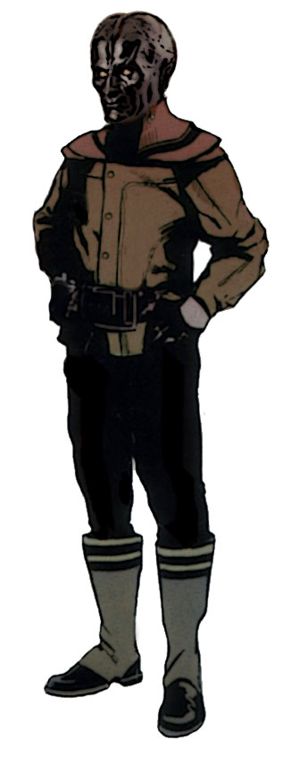

Sakiyan
Special Abilities: Sakiyans begin the game with one rank in Perception or Vigilance. They still may not train Perception or Vigilance above rank 2 during character creation. Sakiyans also start with one rank in the Expert Tracker talent.
Few predators in the galaxy can rival the Sakiyans. As trackers, they are matched only by the Gand. As hunters, they are the equal of the Trandoshans and Defel. As killers, they are virtually unparalleled. Fortunately for the rest of the galaxy, Sakiyans tend to have very little interest in anything beyond their own star system and rarely venture far from their homeworld.
Although the Sakiyans’ hunting prowess would seem to make them better suited for ground-level living, an entire segment of Sakiyan society has moved above their traditional forest encampments to grand and lofty repulsorlift cities. There, the Sakiyans’ best and brightest minds have continued to develop and perfect their repulsorlift technology, which they export across the galaxy. It is this expertise that has allowed them to resist multiple attempted conquests over the years.
Sakiyans are renowned as bounty hunters and assassins; those who leave their homeworld, Saki, find their skills in high demand among the Hutt kajidics. Yet, there is no love lost between the proud Sakiyans and the Hutts, who would dominate them and their homeworld given half the chance.
Though superficially similar to humans, Sakiyans are a distinct species, having evolved along convergent lines but possessing various notable features. Most visibly, Sakiyans have enlarged, bifurcated craniums, lack any hair, and have pointed ears. Their skin is highly reflective, like burnished metal, and varies in color from jet black and dark grey to varying shades of red, blue, and purple. Pale-skinned and albino Sakiyans exist as well. Nearly twice the size of the average human brain, the highly evolved brains of the Sakiyans are able to process impressive amounts of sensory information. As such, Sakiyans have extraordinary senses: they are able to see into the infrared spectrum and possess truly exceptional hearing and smell. Some Sakiyan hunters are said to track their prey by smell alone.
Sakiyan society is organized around complex family and clan relationships. Known as prides, Sakiyan clans form the basis of their communities. Protecting and defending their families and prides are the overriding concerns of members of the species. As such, Sakiyans tend to be territorial and suspicious of strangers and outsiders, especially non-Sakiyans. The prides are largely homogenous, relatively insulated groups, and pride leaders exercise familial and political authority over their clans and communities. Sakiyan skin tones are one means by which prides identify themselves, though there is little overt prejudice based on skin color between most groups. The notable exception to this is the bigotry directed against light-skinned Sakiyans, who are generally viewed as aberrations by the rest of Sakiyan society, even their own kin. Because of this, paleskinned and albino Sakiyans are more likely than others to leave Saki and forge their own paths in the galaxy
Predators at their core, Sakiyans take great pleasure in the hunt and regard hunting as the truest test of a being’s worth. They tend to view themselves as the ultimate hunters—with some justification—and regard most other species as little more than cud-chewing prey, barely worthy of the most minimal respect. Sakiyans are also noted for their distinct lack of humor as well as their intellectual and problem-solving abilities; they rarely take kindly to being proven wrong.
Situated on the edge of the Bootana Hutta, deep within Hutt Space, Saki is a tropical world of broad oceans and lush rain forests, which have been preserved by the Sakiyans’ remarkable repulsorlift technology. Rather than clear away their hunting territory, they have instead expanded skyward with massive floating cities and fortresses.
Despite being under the economic dominion of the Hutts, the Sakiyans have maintained their own cultural identity, which includes their native language. However, most Sakiyans are also fluent in Huttese and speak at least rudimentary Basic.
Thanks to their intelligence and their almost preternatural senses, Sakiyans are natural predators and excel at the hunt. Most Sakiyans who roam the galaxy gravitate toward becoming bounty hunters and assassins, and they typically view their prey as little more than sport. A general lack of empathy for what they perceive as “lesser” species can lead many Sakiyan assassins and bounty hunters to accept contracts that might be viewed as unsavory to others, and their sense of honor pushes them to complete a contract at almost any cost.
akiyans take honor seriously. They divide honor into two types, monthrcel— personal honor— and yithrcel— pride honor. Monthrcel, a Sakiyan’s individual honor, can be lost or redeemed only via personal deeds. If a Sakiyan incurs dishonor by cowardice or failing to protect his family, such a stain can only be removed by his own actions. Dying with a black mark on one's personal honor is one of the greatest tragedies for a Sakiyan.
Yithrcel, on the other hand, is the honor of a Sakiyan’s pride or clan. A significant blemish on one’s personal honor can bring shame to a Sakiyan’s entire pride. While personal honor can only be reclaimed by the individual, yithrcel can be recovered by the children and descendants of a Sakiyan who disgraced the clan. Very often, the strict Sakiyan code of honor requires the spilling of blood. Honor duels and feuds are common, and vendettas are passed down through many generations.
For such a prideful and warlike people, every passing slight or disagreement could potentially lead to violence and bloodshed. Fortunately, their formalized honor rituals also help restrain their passions. The honor system imposes an almost inviolable code of conduct that prevents them from acting too impulsively for fear of incurring dishonor. Of course, Sakiyans do not normally attribute honor to other species, and they rarely apply their normal rules of conduct to dealings with humans and other aliens.